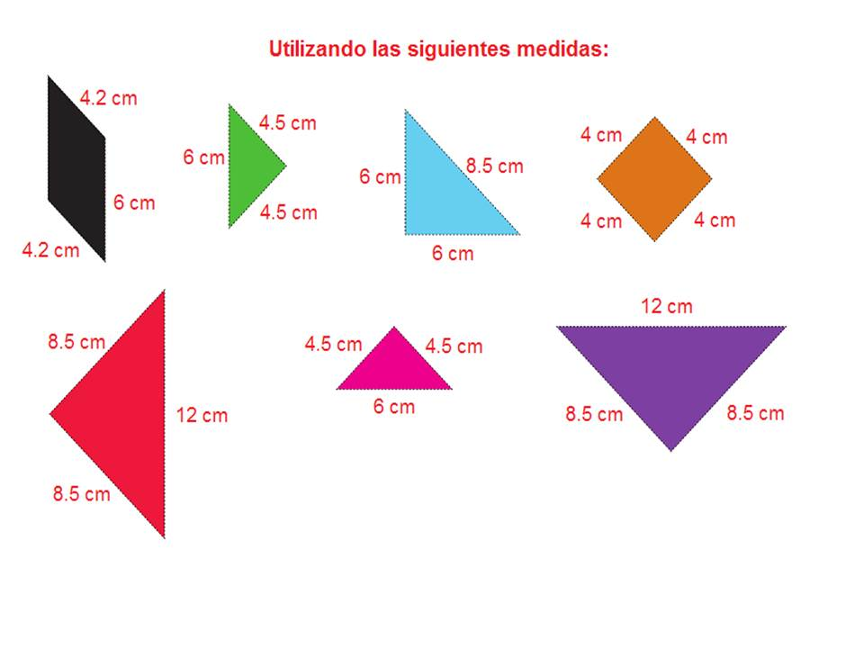
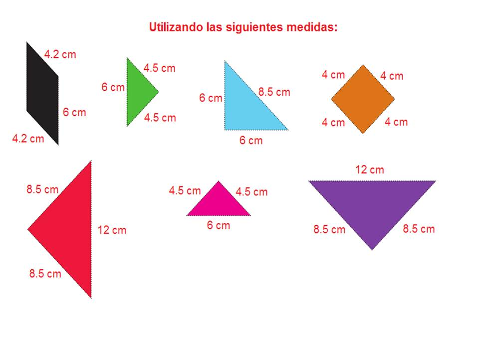

Ahora vamos a poner en práctica lo aprendido.
Observa detalladamente las medidas de las figuras del Tangram:

Observa detalladamente las medidas de las figuras del Tangram:

Realiza las siguientes figuras en la aplicación de GeoGebra que aparece más abajo y calcula el perímetro teniendo en cuenta las medidas de los lados de las figuras que se presentan en la parte inicial.
¿Cómo es posible que hayan figuras diferentes con igual perímetro o igual área?
Obra publicada con Licencia Creative Commons Reconocimiento No comercial 4.0